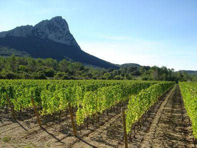

Pic
Saint-LoupLa sentinelle des garrigues


⟹ Sites Emblématiques ⟸
À une vingtaine de kilomètres au nord de Montpellier, le pic Saint-Loup constitue l’un des reliefs les plus emblématiques du Languedoc. Sa silhouette triangulaire, visible depuis la plaine montpelliéraine et une partie du littoral, culmine à environ 658 mètres d’altitude. Face à lui se dresse la montagne de l’Hortus ; entre les deux reliefs s’ouvre le col de Fambetou, passage naturel ancien entre la plaine et l’intérieur des terres.
L’histoire du pic commence au Jurassique, lorsque d’épaisses couches de sédiments calcaires se déposent au fond d’une mer chaude. Transformés en roche, ces calcaires sont ensuite soumis à d’importantes contraintes tectoniques. Le soulèvement et la compression liés à la formation des Pyrénées plissent et redressent les couches. Le pic Saint-Loup correspond ainsi à un spectaculaire relief plissé dont certaines strates calcaires sont presque verticales sur le versant nord.
L’érosion a progressivement dégagé les couches les plus résistantes. Elle explique l’asymétrie du massif : le versant nord forme une paroi abrupte et rocheuse, tandis que le versant sud descend plus progressivement vers les garrigues. L’Hortus, qui lui fait face, appartient au même grand ensemble géologique mais présente une structure différente. Ensemble, les deux montagnes forment une véritable porte naturelle dans l’arrière-pays montpelliérain.

La région est fréquentée depuis la Préhistoire. Grottes, abris, dolmens, habitats et autres vestiges témoignent d’une occupation ancienne des garrigues et des plateaux. Les communautés agro-pastorales ont progressivement ouvert les milieux, élevé des troupeaux et cultivé les terres les plus favorables. Les drailles et chemins reliant les plaines aux reliefs ont joué pendant des siècles un rôle important dans les déplacements des hommes et des animaux.
Durant l’Antiquité puis le Moyen Âge, le pic domine un territoire situé au contact de plusieurs voies de circulation. Les villages de Cazevieille, Saint-Mathieu-de-Tréviers, Valflaunès, Saint-Jean-de-Cuculles et Mas-de-Londres s’organisent dans son environnement immédiat. Les terres sont consacrées à l’élevage, aux céréales, à l’olivier et progressivement à la vigne, culture appelée à devenir l’un des grands marqueurs du paysage.
Le nom du pic est indissociable d’une légende médiévale très populaire. Trois frères ou trois chevaliers selon les versions — Loup, Guiral et Clair — auraient été amoureux de la même jeune femme, Bertrade. Partis en croisade, ils auraient convenu qu’à leur retour elle choisirait son époux. Mais Bertrade serait morte pendant leur absence. Accablés, les trois hommes se seraient retirés en ermites sur trois montagnes distinctes, qui auraient pris leurs noms : Saint-Loup, Saint-Guiral et Saint-Clair. Il s’agit d’un récit légendaire et non d’un événement historiquement démontré, mais il a profondément marqué l’imaginaire régional.
Le sommet possède depuis longtemps une dimension religieuse. Une chapelle dédiée à saint Joseph et une grande croix dominent aujourd’hui le pic. Le lieu a accueilli pèlerinages, processions et pratiques de dévotion, renforçant le caractère symbolique de cette montagne qui domine tout le pays montpelliérain. La croix sommitale, visible de loin, est devenue l’un des éléments caractéristiques de sa silhouette.
Au pied du massif, l’histoire de la viticulture est particulièrement ancienne. La vigne est cultivée dans le Languedoc depuis l’Antiquité, mais les terroirs du Pic Saint-Loup acquièrent progressivement une réputation propre grâce à leur situation particulière. Les sols calcaires, les éboulis, l’altitude relative et les contrastes thermiques liés à la proximité des reliefs donnent au vignoble une forte identité. À l’époque contemporaine, « Pic Saint-Loup » devient l’un des noms les plus connus du vignoble languedocien.
La montagne a également longtemps fourni des ressources aux populations locales : pâturages pour les troupeaux, bois, pierre et plantes de la garrigue. Les incendies, le déboisement, le pâturage puis la déprise agricole ont successivement modifié la végétation. Les paysages actuels de garrigue ne sont donc pas entièrement « naturels » : ils portent la trace d’une très longue interaction entre le climat méditerranéen et les activités humaines.
À partir du XIXe et surtout du XXe siècle, le pic devient aussi un lieu privilégié pour les naturalistes, randonneurs et amateurs de paysages. Son relief spectaculaire, sa proximité de Montpellier et la richesse de ses milieux naturels en font un symbole de l’arrière-pays. Il est parfois surnommé la « Sainte-Victoire du Languedoc », comparaison qui souligne son rôle de montagne-repère dominant une grande ville et une vaste plaine méditerranéenne.
Le massif du Pic Saint-Loup et de l’Hortus présente aujourd’hui un intérêt écologique majeur. Falaises, pelouses sèches, garrigues, boisements et combes abritent une flore méditerranéenne diversifiée et de nombreux oiseaux rupestres, notamment plusieurs espèces de rapaces. Les politiques contemporaines de protection cherchent à concilier fréquentation, viticulture, pastoralisme, prévention des incendies et conservation de ces habitats.
L’histoire du Pic Saint-Loup se lit donc à plusieurs échelles : celle des mers jurassiques qui ont formé ses calcaires, celle des mouvements tectoniques qui ont redressé ses strates, celle des populations préhistoriques et paysannes qui ont façonné les garrigues, celle des légendes et pèlerinages qui ont sacralisé le sommet, et enfin celle de la viticulture et de la protection des paysages. Cette superposition explique pourquoi le pic est bien davantage qu’un simple sommet : il est devenu l’un des grands repères géographiques, culturels et symboliques de l’Hérault.
Le pic Saint-Loup appartient à un vaste ensemble de reliefs calcaires plissés qui s'étend des Pyrénées à la Provence. Sa crête, longue de 6 kilomètres, culmine à 658 mètres et affiche une face nord verticale et vertigineuse, tandis que le versant sud, plus doux, accueille marcheurs et randonneurs.
Le pic est le résultat d'un plissement de roche vers le nord, laissant place à une crête de calcaire corallien après des millions d'années d'érosion.
— Étude géologique du site du Pic Saint-LoupLa végétation de garrigue — chêne vert, chêne kermès, pin d'Alep, arbousier, thym et romarin — embaume les sentiers, tandis que les falaises de la face nord accueillent buses et milans. Depuis le sommet, le panorama s'étend par temps clair du mont Aigoual au mont Ventoux, en passant par les Cévennes et la Méditerranée.
Château de Montferrand ruines d'une forteresse médiévale du XIIe siècle perchée sur un éperon calcaire à 400 m d'altitude.
Saint-Martin-de-Londres village aux portes du pic, avec son église romane et son cloître, joyau de l'art roman languedocien.
Montagne de l'Hortus falaise qui fait face au pic, causse non plissé aux paysages très différents.
Vignobles du Pic Saint-Loup une soixantaine de vignerons et restaurateurs mobilisés autour du terroir viticole AOC.